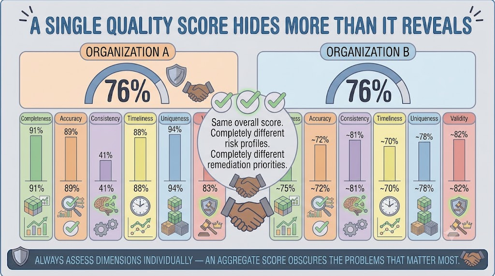
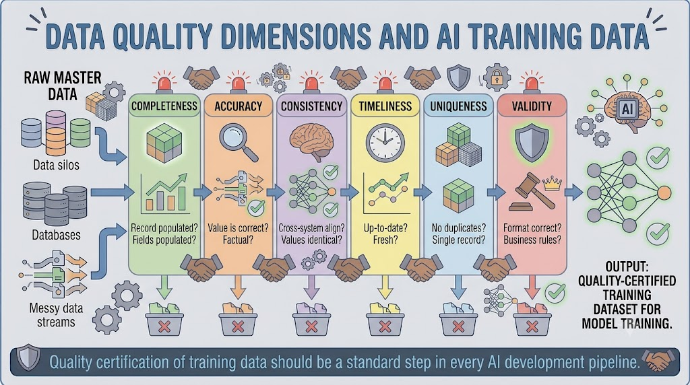
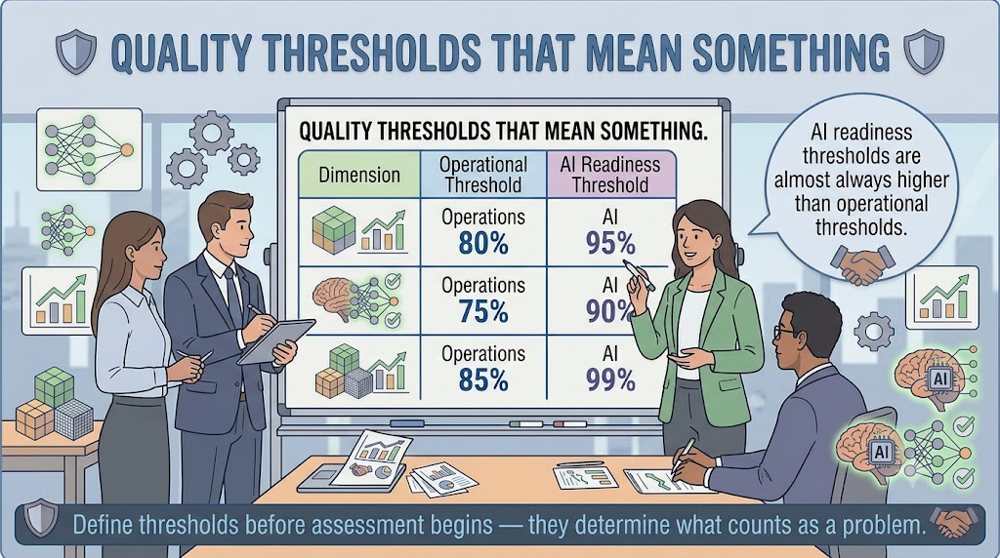
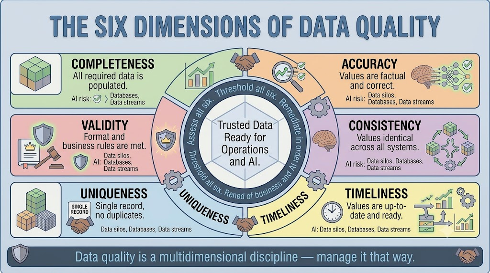

Dimensions of Data Quality
Module support notes
Why Dimensions Matter More Than Scores
A composite data quality score is useful for executive reporting but dangerous as a management tool. Two domains can produce identical composite scores while having completely different quality profiles — one with a severe consistency problem hidden by strong performance across other dimensions, the other with moderate but evenly distributed weaknesses.
For AI programs specifically, a severe consistency problem in a high-impact domain is a critical risk regardless of the composite score — because inconsistent training data corrupts model learning in ways that accuracy, completeness, and validity problems typically do not.
Warning
Always assess dimensions individually — an aggregate score obscures the problems that matter most. Two organizations can share an identical overall quality score of 76% while one has a consistency dimension at 41% and the other has all six dimensions between 70% and 82%. Same score. Completely different risk profiles. Completely different remediation priorities.

Dimensions in AI Training Data
The relationship between data quality dimensions and AI training data is more specific than it might initially appear. Each dimension creates a distinct failure mode in the model training pipeline.
- Completeness failures reduce the volume of usable training examples
- Accuracy failures introduce incorrect labels and feature values that teach the model the wrong patterns
- Consistency failures mean the model encounters the same entity described differently and learns unstable representations
- Timeliness failures mean the model learns patterns from a world that no longer exists
- Uniqueness failures inflate the apparent frequency of certain entities in training data
- Validity failures cause feature engineering pipelines to fail or produce unexpected outputs
Tip
Apply dimension-based quality checks as a formal gate in your AI training data pipeline — not as a retrospective audit. Organizations that certify training data quality before model training consistently produce more reliable models than those that feed raw or lightly filtered master data directly into model training environments.

Setting Quality Thresholds by Dimension
Quality thresholds are the standards against which assessment findings are evaluated. Without defined thresholds, a completeness score of 78% is just a number — it has no meaning until the organization has decided that 90% is the minimum acceptable level.
Setting thresholds before assessment begins forces the organization to make explicit decisions about what good looks like, creates clear criteria for prioritizing remediation, and establishes the baseline against which future progress is measured. One important discipline is to set separate thresholds for operational use and AI readiness — because AI systems typically require higher quality standards than operational processes, particularly on dimensions like uniqueness and consistency where AI amplifies the consequences of failure.
Note
AI readiness thresholds are almost always higher than operational thresholds. For example: Completeness — Operations 80%, AI 95%. Consistency — Operations 75%, AI 90%. Uniqueness — Operations 85%, AI 99%. Define thresholds before assessment begins — they determine what counts as a problem worth acting on.

The six dimensions work together as a framework — each one reveals a different kind of quality risk, and all six must be assessed, thresholded, and remediated in order of business and AI impact.
